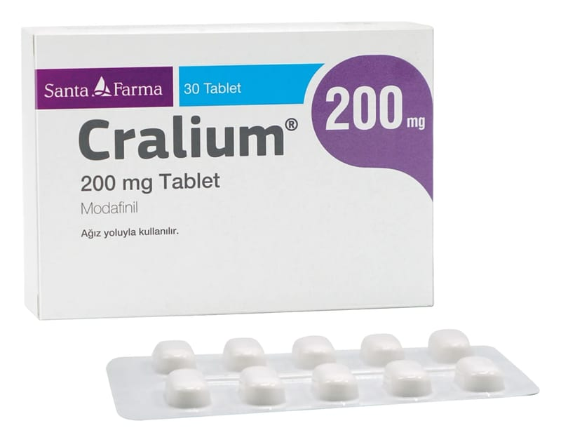

Cralium 200 mg Tablet, 30 Adet

Ne için kullanılır
KT · Bölüm 1• CRALİUM®ağız yoluyla uygulanan tablet formunda bir ilaçtır ve içermiş olduğu modafinil uyanıklık sağlayıcı bir ajan olarak tanımlanır. • CRALİUM®, opak, PVC (polivinilklorür)/ PE (polietilen)/ PVDC (polivinildiklorür)/ alüminyum blister ve ticari ambalajı içinde mevcuttur. Her kutu; beyaz renkli, bikonveks, çentikli oblong tabletlerden 30 adet içerir. • CRALİUM®aşağıdaki tanısı konulmuş uyku bozukluklarından birinin yol açtığı aşırı uyku eğilimli yetişkin hastalarda uyanıklığı artırmak için kullanılır. Narkolepsi (uyku hastalığı) Obstrüktif uyku apnesi; bu uyku bozukluğunda CRALİUM®aşırı uyku halini tedavi etmek için kullanılır, ancak obstrüktif uyku apneye neden olan tıkanıklığı veya tıbbi durumu tedavi etmek için kullanılmaz. Bu uyku bozukluğu için CRALİUM®diğer medikal tedaviler ile birlikte kullanılır. CRALİUM®, CPAP (sürekli pozitif hava yolu basıncı) makinesinin doktorunuzun reçete ettiği diğer tedavilerin yerini almaz. Doktorunuzun reçete ettiği şekilde tedavileri almaya devam etmeniz önemlidir. Vardiyalı çalışmaya bağlı uyku bozukluğu • CRALİUM®bu uyku bozukluklarını iyileştirmeyecektir. CRALİUM®bu uyku bozukluklarının neden olduğu uykululuğu iyileştirmeye yardımcı olabilir, ancak uykululuk durumunuzu tamamen durduramayabilir. CRALİUM®, yeterli uykunun yerine geçmez. İyi bir uyku alışkanlığı ve diğer tedavilerin uygulanması konusunda doktorunuzun tavsiyelerini takip ediniz. • CRALİUM®, sığır kaynaklı laktoz monohidrat içerir.
Bu ilacı kullanmaya başlamadan önce bu KULLANMA TALİMATINI dikkatlice okuyunuz, çünkü sizin için çok önemli bilgiler içermektedir. Bu kullanma talimatını saklayınız. Daha sonra tekrar okumaya ihtiyaç duyabilirsiniz. Eğer ilave sorularınız olursa, lütfen doktorunuza veya eczacınıza danışınız. Bu ilaç kişisel olarak sizin için reçete edilmiştir, başkalarına vermeyiniz. Bu ilacın kullanımı sırasında, doktora veya hastaneye gittiğinizde doktorunuza bu ilacı kullandığınızı söyleyiniz. Bu talimatta yazılanlara aynen uyunuz. İlaç hakkında size önerilen dozun dışında yüksek veya düşük doz kullanmayınız.